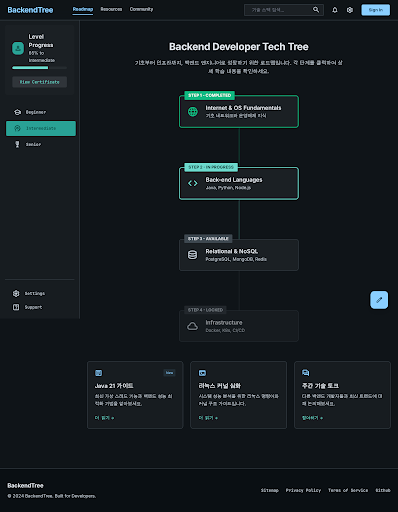
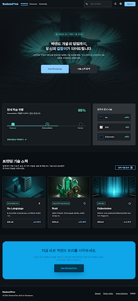
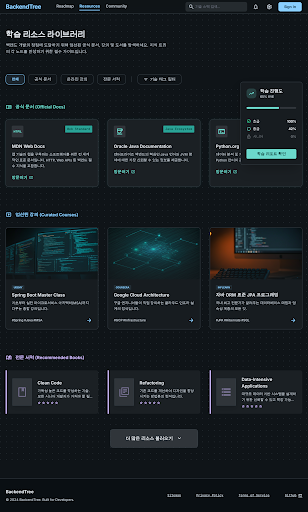

40c1748aa58f484788ec713913a5268a
로드맵 - 테크트리 상세
백엔드 학습 단계를 시각화한 상세 로드맵 화면입니다.
`.nojekyll`을 추가해서 `.stitch-assets/backend-tech-tree-round3` 아래의 `code.html` 파일을 GitHub Pages에서 직접 열 수 있게 했습니다.

백엔드 학습 단계를 시각화한 상세 로드맵 화면입니다.


`Design System`은 이번 프로젝트 메타데이터에서 실제 엔티티가 없어 다운로드할 수 없었습니다.